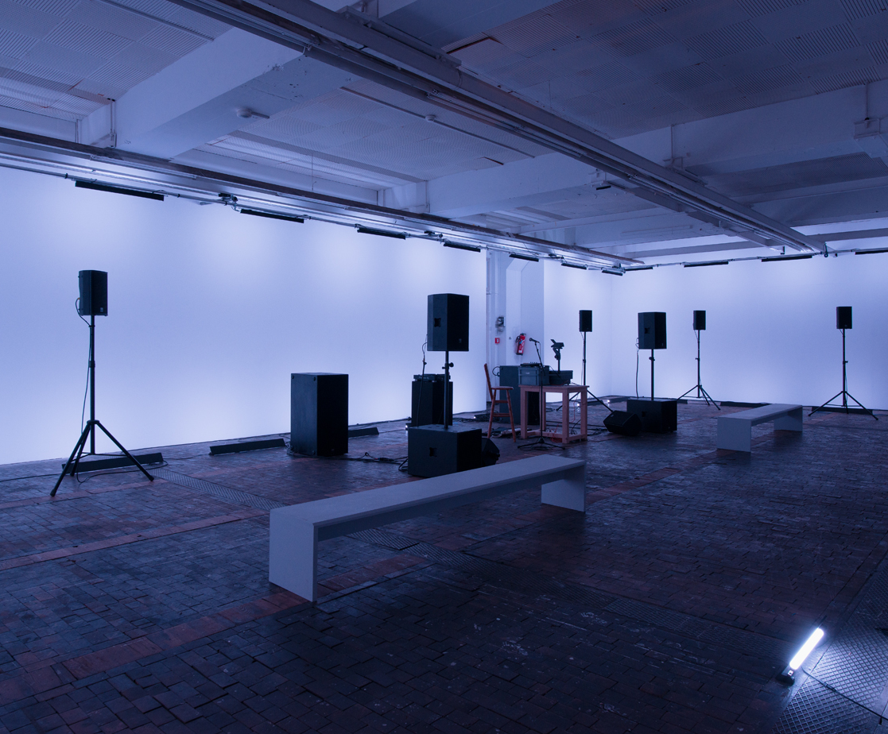

Florent Meng’s brilliant The Lost Line-2018- tells the story of an abandoned tunnel built by political prisoners and peasants in the Cantabrian Mountains, where now stands a laboratory researching dark matter from University of Saragoza.
James N. Kienitz Wilkins’s This Action Lies -2018- is one the biennial’s highlights. The film is a paranoid polyphonic apology of a simple act, offering three perspectives of a simple object’ a Styrofoam to-go cup. Framed by a powerful soundtrack and flirting with the documentary format, the film’s inquiry into the limits of visibility maps the influence of territory on communal behaviors and identities while signaling the overlap between dynamics such as politics and science.
Elysia Crampton, Orcorara (tres estrellas todos yguales)

Using the personal standpoint of an extended and often humorous monologue, This Action Lies weaves together a large socioeconomic constellation around such an underappreciated commercial product.
The work’s impactful mise en abyme emerging out of the several visual reframings and the text’s form and content, drawing disparate references wrapped in a monotonous and confessional tone, produces a powerful statement regarding the interpenetration of the social in the self, while echoing the history of experimental film, referencing Hollis Frampton or Morgan Fishwer.
Andreas Angelidakis, Demos Bar, 2018
Biennale de l’Image en Mouvement at Centre d’Art Contemporain, Genève